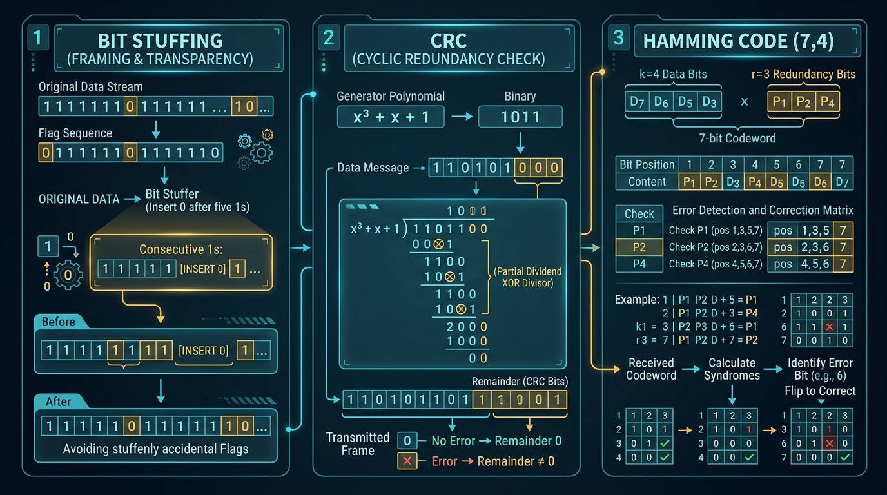

The Data Link Layer transforms raw physical bitstreams into discrete, manageable units called frames and ensures reliable transmission via Error Detection (Parity, Checksum, CRC) and Correction (Hamming Code).
The Physical Layer delivers raw bits without structure. The Data Link Layer divides this bit stream into distinct **Frames**. Framing allows the receiver to detect where a frame begins and ends.
FLAG byte at start and end).01111110 flag).In Byte Stuffing, special delimiter bytes called FLAG mark the start and end of a frame. If the user data itself contains the FLAG byte, an Escape Byte (ESC) is inserted ("stuffed") before it so the receiver knows it is part of data, not a frame boundary.
FLAG → Transmitted as ESC FLAGESC → Transmitted as ESC ESCESC byte upon arrival.
In Bit Stuffing, frames begin and end with a special 8-bit flag pattern: 01111110 (six consecutive 1s).
Rule: Whenever the sender's data stream contains five consecutive 1s, the sender automatically stuffs a 0 bit immediately after them. The receiver automatically removes ("unstuffs") any 0 bit that immediately follows five consecutive 1s.
Network signals suffer from noise, causing bits to flip (0 → 1 or 1 → 0).
In Simple Parity Check, a redundant parity bit is appended to the data unit so that the total number of 1s becomes even (Even Parity) or odd (Odd Parity). Can only detect odd numbers of bit errors (fails if 2 bits flip).
In 2D (Two-Dimensional) Parity Check, data is arranged in a grid, and parity bits are calculated for every row AND every column. Can detect burst errors and correct single-bit errors.
Used extensively in Internet protocols (IP, TCP, UDP). Data is divided into k segments of n bits each. The segments are added together using **1's complement addition**, and the 1's complement of the sum becomes the Checksum appended to the data.
At receiver: Add all received segments including checksum. If result is all 1s (0xFFFF), data is valid.
CRC is a powerful error detection method based on **binary polynomial division** (using XOR operation without carry).
Hamming Code is a Forward Error Correction (FEC) technique invented by Richard Hamming. It can detect up to 2-bit errors and correct single-bit errors by adding redundant parity bits at positions that are powers of 2 (1, 2, 4, 8, 16...).

| Bit Position | 7 | 6 | 5 | 4 | 3 | 2 | 1 |
|---|---|---|---|---|---|---|---|
| Type | Data D4 | Data D3 | Data D2 | Redundant P4 | Data D1 | Redundant P2 | Redundant P1 |
| Binary Pos | 111 | 110 | 101 | 100 | 011 | 010 | 001 |
Parity Bit Calculations:
If error occurs, evaluating check bits yields a binary number (e.g. 101 = 5) which indicates the exact error bit position!